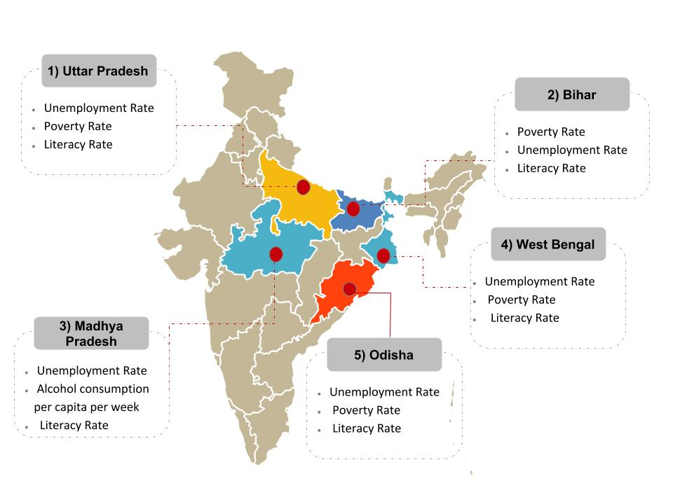

| MAP SHOWING HIGH DENSITY ZONES IN INDIA FOR DOWRY DEATHS CASES | LIST OF STATES ACCORDING TO DOWRY DEARTHS CASES REGISTERED IN 2014 | ||
|  | 1> Uttar Pradesh 29.20 % | 2> Bihar 16.24 % | 3> Madhya Pradesh 8.67 % |
| 4> West Bengal 5.93 % | 5> Odisha 5.22 % | 6> Rajasthan 4.83 % | |
| 7> Jharkhand 4.14 % | 8> Karnataka 3.70 % | 9> Haryana 3.47 % | |
| 10> Telangana 3.42 % | 11> Maharashtra 3.30 % | 12> Andhra Pradesh 2.54 % | |
| 13> Assam 2.22 % | 14> Delhi UT 1.81 % | 15> Chhattisgarh 1.51 % | |
| 16> Tamil Nadu 1.12 % | 17> Punjab 1.06 % | 18> Uttarakhand 0.45 % | |
| 19> Tripura 0.39 % | 20> Kerala 0.33 % | 21> Gujarat 0.27 % | |
| 22> Jammu & Kashmir 0.06 % | 23> A & N Islands 0.04 % | 24> Chandigarh 0.02 % | |
| 25> Arunachal Pradesh 0.01 % | 26> Himachal Pradesh 0.01 % | 27> Manipur 0.01 % | |
| 28> Meghalaya 0.01 % | 29> Puducherry 0.01 % | 30> D&N Haveli 0.00 % | |
| 31> Daman & Diu 0.00 % | 32> Goa 0.00 % | 33> Lakshadweep 0.00 % | |
| 34> Mizoram 0.00 % | 35> Nagaland 0.00 % | 36> Sikkim 0.00 % | |